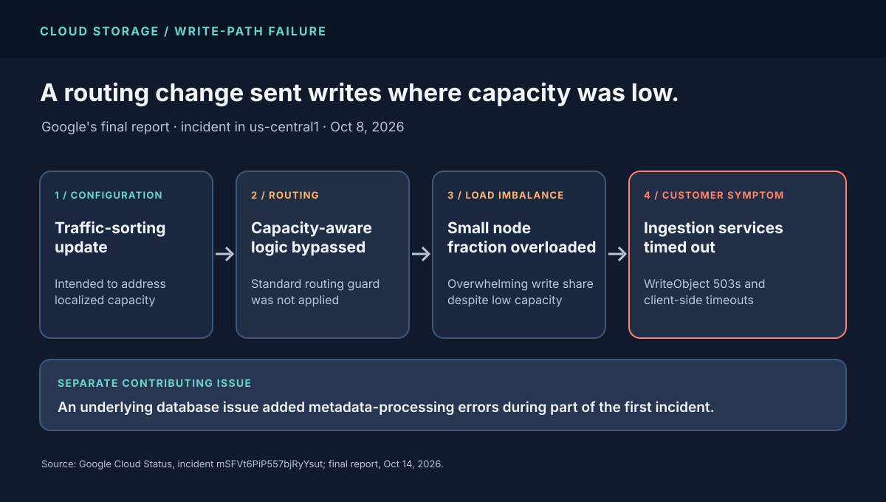
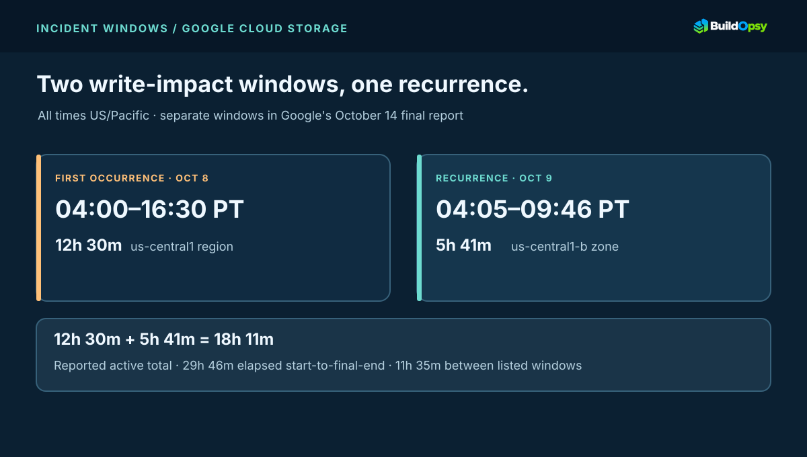

1. Two write-impact windows, not one continuous outage
Google's final report, posted October 14, separates the incident into two periods, all times US/Pacific. The first ran October 8, 04:00–16:30, in us-central1: 12 hours 30 minutes. The recurrence ran October 9, 04:05–09:46, in us-central1-b: 5 hours 41 minutes. Google reports an active total of 18 hours 11 minutes.
The listed windows are separated by 11 hours 35 minutes (October 8, 16:30 to October 9, 04:05). From the first start at 04:00 on October 8 to the final end at 09:46 on October 9 is 29 hours 46 minutes elapsed. That elapsed span includes the interval between the two reported windows; it is not the report's active-duration total.
The start time also moved between updates. The interim status messages posted during the incident say it began at 05:19 US/Pacific on October 8. The final report's first-occurrence start is 04:00, and its detection time is 04:50. The report does not mention 05:19 or reconcile the 79-minute difference, and the detection time it gives is 29 minutes earlier than the start time in the public updates. For an operator reading the record, the final report's numbers are the ones to use; the interim timestamps show how a posted start can drift while the incident is still open.
Customers primarily saw HTTP 503 UNAVAILABLE on WriteObject and client-side timeouts; successful writes had elevated latency. Google's impact section says other regions and other Google Cloud services were unaffected by this event.
2. A routing configuration bypassed capacity-aware placement
In the final report's root-cause account, an update to the Cloud Storage load-balancing layer was meant to address localized capacity constraints. The update bypassed standard capacity-aware routing. A small fraction of storage backends then received an overwhelming share of writes even though those nodes had little available serving capacity. The affected object-ingestion services timed out, so writes routed to them became slow or failed.
The report describes a separate underlying-database issue that added metadata-processing errors during part of the first incident window. It does not present that database fault as the cause of the next-day recurrence; it identifies the recurrence separately as an incomplete rollback of an upload-planner feature.
3. The capacity constraint is simple; the public numbers are not there
For each backend, incoming write work must fit within its available serving capacity: offered load ≤ available capacity. The final report says the routing configuration could bypass that capacity-aware check and gives the resulting imbalance in qualitative terms. It publishes no backend counts, write rates, capacity values or per-node measurements, so the report supports the failure mechanism but not a numerical reconstruction of the load imbalance.
The important boundary is that an optimizer can only protect capacity if its routing decision still respects the capacity limit. If a configuration path can bypass that limit, a region may have unused capacity and still overload the small set of nodes receiving the misrouted work.

4. Initial mitigation gave temporary relief; an incomplete rollback allowed recurrence
Google first tried to allocate emergency capacity, but regional capacity limits blocked that step. Engineers then drained traffic from the most overloaded nodes, disabled the traffic-sorting optimization and rolled back a recent metadata-database update. Those actions provided temporary relief.
Google attributes the October 9 recurrence to an incomplete rollback of an upload-planner feature that broke load balancing and overloaded a few smaller storage backends. The report says the incident was permanently resolved when engineers fully reverted the problematic load-balancing configuration, restoring the previous capacity-aware routing behavior. Drained nodes returned to service after traffic and resource use stabilized.
The distinction is operationally important: disabling one optimization and partially rolling back a feature did not remove every changed path. The final resolution required a full configuration revert.
5. Guardrails supported by the final report
Google lists three prevention efforts: validate load-balancing changes in smaller, alternate regions before larger high-utilization regions; enforce capacity constraints so routing cannot send work to clusters without enough serving resources; and improve internal data movement in highly utilized storage cells.
For an infrastructure review, make those goals testable: reject a routing configuration that bypasses capacity checks; roll the change through a small region before a high-utilization one; track every component changed by an upload-planner release; and rehearse a complete revert, including traffic drain and restoration. These are Buildopsy recommendations based on the published failure sequence, not claims that Google had no other safeguards.
6. Verdict: the final report explains both windows, but not their scale
Google's final report establishes a capacity-aware-routing bypass as the first write failure's mechanism, a separate metadata issue during part of that window, and an incomplete upload-planner rollback as the cause of the next day's recurrence. It records 12h30 and 5h41 of impact, totaling 18h11 across the two windows.
The report does not disclose node counts, incoming write rates, per-node capacity, affected customer counts or customer losses. The public record therefore supports the configuration failure and recovery sequence, but not a quantitative load model or financial estimate.
Sources and Method
I checked Google's final incident report, posted October 14, 2026 at 00:15 PDT: “Incident First Occurrence,” “Incident Recurrence,” “Root Cause,” “Remediation and Prevention” and “Description of Impact.” The duration arithmetic is reproducible: 12h30 + 5h41 = 18h11 reported active time. Buildopsy calculates 29h46 from October 8 at 04:00 to October 9 at 09:46; subtracting 18h11 leaves the 11h35 interval between the reported windows. Those two elapsed-time figures are calculations, not additional Google-reported impact durations. This update uses the final report rather than the October 9 preliminary report.
- Google Cloud Status: Cloud Storage upload/write incident mSFVt6PiP557bjRyYsut, final incident report posted October 14, 2026
- Buildopsy: September us-central1 fiber-isolation incident (a separate event)
- Buildopsy: us-west1 network-capacity incident (a separate event)
- Buildopsy: Cloudflare R2 credential-rotation outage — a separate write-path failure